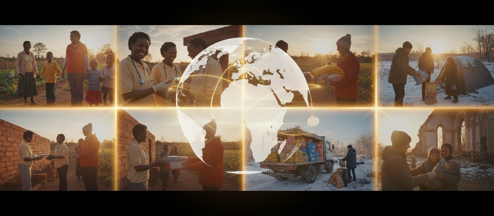
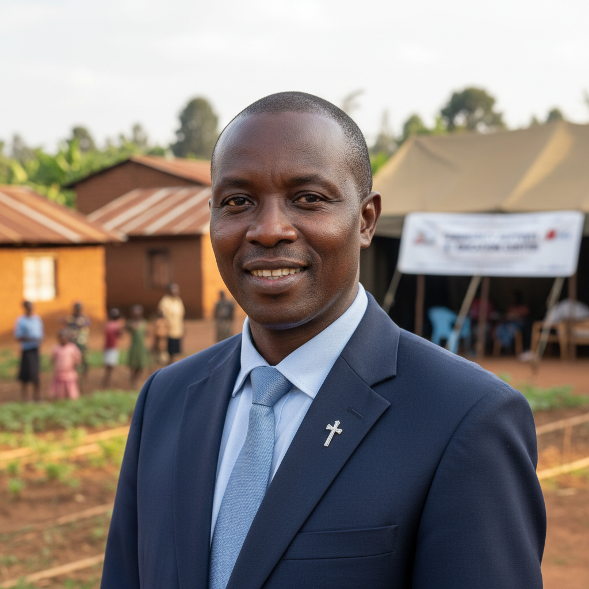

Compassion Has No Borders.
Faith in action. Hope without limits. Love without borders.
Our Story
Compassion Plus Hope began as a simple response to a profound calling. What started as a single mission trip to a remote village in Rwanda has grown into a cross-continental commitment to some of the world's most vulnerable populations.
Our growth into Ukraine followed the same principle: listening to local leaders and responding with practical, faith-rooted action. We don't just see nations; we see neighbors. Our journey is one of deepening relationships and expanding hope, one nation at a time.
Mission
To restore human dignity through compassionate action.
Vision
A world where every community has the resources to flourish.
Our Approach
Faith-Driven
Motivated by faith to serve all people with unconditional love.
Community-First
Local leaders identify the needs; we provide the support.
Practical Help
Tangible aid like food, medicine, and school supplies.
Long-Term Relationships
We commit to communities for years, not just one trip.
Local Partnerships
Working through existing trusted local organizations.
Full Transparency
Clear reporting on every dollar spent in the field.
Meet the Mission
John & Mary Smith
FoundersLeading the mission with 20+ years of humanitarian experience.

Pastor Emmanuel
Rwanda Field DirectorCoordinating local aid efforts in Gatare Village.
Dr. Elena Vorona
Ukraine Medical LeadOverseeing mobile medical units in displaced communities.